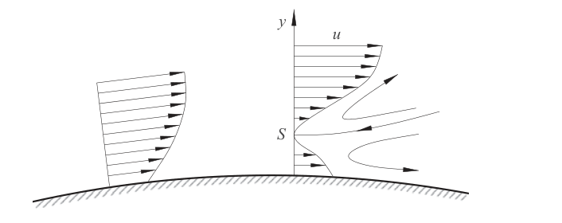
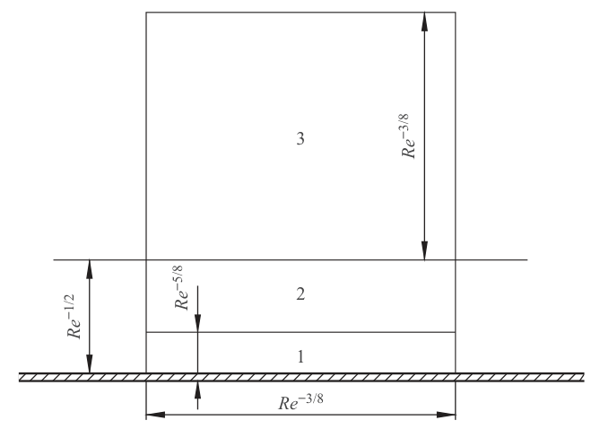
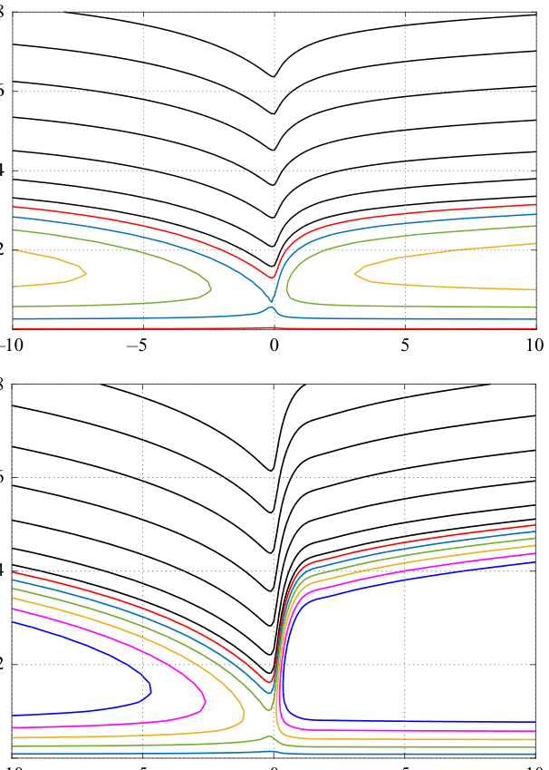
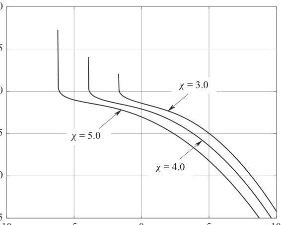

01中文摘要
研究入射斜激波或Prandtl–Meyer膨胀扇在边界层中产生的扰动，外流为超声速，激波或膨胀扇与边界层的入射点向下游移动。采用随激波移动的坐标系，此时壁面向上游运动。先数值研究Vsh=O(Re^{−1/8})的情形，用经典三重台方程描述干扰，发现随Vsh增大，边界层对膨胀扇比对压缩激波更易分离。再取1≫Vsh≫Re^{−1/8}，相互作用可视为无粘准定常，由无粘分析确定压力分布；近壁粘性底层由Prandtl方程描述，当膨胀扇足够强时解出现奇异性，奇异点邻域呈加速“膨胀”，类似Neiland对凸角超声速分离的分析。
02阅读说明
bundle 共 1572 行，已全部读到 EOF。原文为 Ruban, Djehizian, Kirsten & Kravtsova, J. Fluid Mech. (2020) 900, A9, doi:10.1017/jfm.2020.486，共 32 页。所有公式、页码、图号均取自 bundle 文本与图注，未另读原 PDF。bundle 中 (5.34)、(5.38)、(6.26)、(6.27a) 等积分式排版错位，仅按可读部分记录其式号与物理角色，不擅自补全。 文章类型：期刊
03一句话核心与三句话摘要
上游运动壁面边界层中膨胀扇而非激波诱发分离，并出现二次奇异性
- 在随激波运动的坐标系中，上游运动壁面遇到入射激波不分离，遇到膨胀扇才分离。 原文明确
- triple-deck 数值解在 Uw=2.0 与 3.0 时给出下游主涡和上游次涡，主涡随壁速增大。 原文明确
- 渐近分析把下层分为无黏 1a 与黏性 1b，并在分离点附近导出 region C 的积分微分方程与第二奇点。 AI概括
04核心内容清单
| 要点 | 类型 | 重要性 | 原文依据 | 属性 |
|---|---|---|---|---|
| 上游运动壁面情形下，入射激波不导致分离，膨胀扇才导致分离。 | 主结论 | A | p.10 第2节；p.13–14 第3.1节；p.30 第7节 | 原文明确 |
| triple-deck 数值解在 Uw=2.0/3.0 时形成下游主涡与上游次涡，主涡随 Uw 增大、次涡相对减小。 | 数值结果 | A | p.14 第4节，图6 | 原文明确 |
| 膨胀扇强度 P̄s=−1/2 时 Ue 在 X*=0 首次为零，并给出 (3.18)、(3.19) 的解析解。 | 定量结果 | A | p.13–14，式(3.16)–(3.19) | 原文明确 |
| 1≫Uw≫Re^-1/8 时 region 1 分裂为无黏 1a 与黏性 1b；1a 的压力解由 (3.13)–(3.16) 给出。 | 渐近结构 | A | p.10–13 第3节 | 原文明确 |
| 1b 解在膨胀扇情形于 X*=0 附近发生奇异；激波情形保持光滑。 | 机制 | A | p.16–23 第5节；p.30 第7节 | 原文明确 |
| X*→0 时 1b′ 的位移效应占优：V/U|1b≈−4(lnX*−1)/X*²，而 1a 仅贡献 1/(2Uw²)。 | 渐近结果 | A | p.21–23，式(5.37)(5.42) | 原文明确 |
| region C 由 condensed-flow 条件与积分微分方程 (6.27a) 控制；压力随 X 减小单调升高并在有限 X0 发散。 | 主结论 | A | p.26–30，式(6.17)–(6.30)，图11 | 原文明确 |
| 数值方法用 (4.1)–(4.3) 的有限差分表示与 Newton 迭代求解位移函数和压力梯度。 | 方法 | B | p.14 第4节 | 原文明确 |
| 双涡结构与 pseudo-shock、collisional separation 存在类比。 | 解释 | B | p.30 第7节 | 原文明确 |
| 第二奇点的物理过程与 Neiland (1969a)、Neiland & Sychev (1966) 的膨胀解奇点相同。 | 解释 | B | p.30 第7节 | 原文明确 |
| 自诱导压力升高后的新区域尚未分析，作者计划在后续论文中讨论。 | 局限 | C | p.30 第6.1节末 | 原文明确 |
05引言：研究问题与领域缺口
【原文明确】边界层分离点位置必须由边界层本身决定；非定常分离与运动壁面分离存在类比，分离点运动方向决定壁面相对运动方向（p.1–5）。【原文明确】已有 triple-deck 计算（Zhuk 1982；Yapalparvi & van Dommelen 2012）表明壁速增大抑制激波诱导分离（p.6）。【原文明确】本文研究分离点向下游运动、即壁面相对向上游运动时，入射激波与 Prandtl–Meyer 膨胀扇的作用（p.1、p.6）。
06流动条件与几何构型
| 项目 | 数值/描述 | 依据 | 备注 |
|---|---|---|---|
| 几何与来流 | 平板与超声速来流平行；激波/膨胀扇由平板上方斜坡产生 | p.6 第2节，图3 | |
| 运动学 | 激波/膨胀扇相对平板向下游运动，速度 Vsh；随激波坐标系中壁面以 Uw 向上游运动 | p.6、p.8 第2节 | |
| Reynolds 数 | Re=ρ∞V∞L/μ∞→∞；L 为前缘到相互作用点的距离 | p.7 第2节 | |
| 来流 Mach 数 | M∞>1 且有限；β=√(M∞²−1) | p.7–8 第2节 | |
| 速度比（triple-deck） | Vsh/V∞=O(Re^-1/8) | p.6 第2节 | |
| 速度比（渐近） | 1≫Vsh/V∞≫Re^-1/8，等价于 Uw→∞ | p.6 式(2.1)；p.10 式(2.5) | |
| 气体模型 | 完全气体，γ 为常数；密度与黏度用壁面值 ρw、μw 作仿射变换 | p.7–9 第2节 | |
| 热边界条件 | 绝热壁或局部等温壁均适用 | p.9 第2节 | |
| 壁面条件 | 无滑移：U=−Uw、V=0（Y=0） | p.8 式(2.3c) | |
| 外部扰动 | 跨激波/膨胀扇压跳 ∝(Vsh/V∞)²，外部用 Ackeret 理论 | p.6 第2节 | |
| 数值工况 | Uw=2.0 与 3.0；膨胀扇强度 Ps=−Uw²/2 | p.14 第4节，图6、图7 | |
| region C 工况 | ΨM=−0.4；χ=3.0、4.0、5.0 | p.28 第6节，图11 |
07核心现象与关键参数
| 参数 | 定义 | 数值 | 关系/说明 | 依据 |
|---|---|---|---|---|
| Re | Reynolds 数 | Re=ρ∞V∞L/μ∞；Re→∞ | L 为前缘到相互作用点的距离；小参数 Re^-1/8 | p.7 第2节 |
| Uw | 按 Re^-1/8 缩放的壁面速度（随激波坐标系中向上游为正） | O(1) 数值取 2.0、3.0；渐近 Uw→∞ | Uw=Vsh Re^{1/8}μw^{-1/4}ρw^{1/2}/(V∞λ^{1/4}β^{-1/4}) | p.8–9 第2节；p.14 |
| Ps | 激波/膨胀扇强度参数 | 激波 Ps>0；膨胀扇 Ps<0；数值取 Ps=−Uw²/2 | Ps=Δp_sh Re^{1/4}μw^{-1/2}/(ρ∞V∞²λ^{1/2}β^{-1/2}) | p.9 第2节；p.14 |
| P̄s | 按 Uw² 归一的激波/膨胀扇强度 | Ps=Uw²P̄s；膨胀扇分离阈值 P̄s=−1/2 | 决定 Ue 是否在 X*=0 归零 | p.12 式(3.6)；p.13 式(3.17) |
| β | 可压缩相似参数 | β=√(M∞²−1) | p.8 第2节 | |
| λ、ρw、μw | 相互作用区前常规边界层的无量纲壁面剪应力、壁面密度与黏度 | 由可压缩 Blasius 解给出；具体数值文中未提及 | p.8 第2节 | |
| σ | region C 的纵向缩放参数 | 由 2|lnσ|/σ²=Uw² 定义 | p.23 式(6.1)(6.2) | |
| χ | region C 的奇异性参数 | χ=2|lnσ|；数值取 3.0、4.0、5.0 | p.24 式(6.8)；p.28 | |
| ΨM | region C 中最大压力点 M 对应的流函数值 | −0.4（图11 工况） | p.26 式(6.21)；p.28 | |
| X0 | region C 压力发散的位置 | 有限值，随参数变化；文中未给出具体数值 | P̄→8π²/[χ²(X̄−X̄0)²] | p.29 式(6.30) |
| Ue | region 1b 外缘速度 | P̄s=−1/2 时 Ue=−e^{−X*}/(1+e^{−X*}) | X*→∞ 时 Ue→−1；X*→0+ 时 Ue→−X*/2 | p.13 式(3.18)；p.18 式(5.15) |
08方法与数据
【原文明确】在随激波/膨胀扇运动的坐标系建立 triple-deck 问题 (2.1)–(2.4)：Vsh~Re^-1/8 时直接数值求解，1≫Vsh/V∞≫Re^-1/8 时作渐近分析（p.6–9）。【原文明确】数值上采用 Kravtsova et al. (2005) 的有限差分格式与 Newton 迭代 (4.1)–(4.3)（p.14）。【原文明确】渐近上利用最小退化原则把 region 1 分为无黏 1a 与黏性 1b，再引入 1b′、1a′ 与 region C，最终得到积分微分方程 (6.27a)（p.10–30）。
| 项目 | 内容 | 依据 | 备注 |
|---|---|---|---|
| 随激波运动的坐标系 | 把分离点下游运动问题转化为壁面向上游运动的准定常问题；壁面速度 Uw 作为相似参数 | p.1、p.6 第2节 | |
| triple-deck 渐近展开 | 对 Re^-1/8 作三层黏性-无黏相互作用展开，并用 ρw、μw、λ、β 的仿射变换消去物性参数 | p.7–8 式(2.2) | |
| 有限差分数值解 | 将 (2.3) 离散为 (4.1)–(4.3)，用 Newton 迭代求解 (M−N)A=R | p.14 第4节 | |
| von Mises 变换 | 把动量与连续方程写成 (2.4a,b)，便于区域分裂与流函数匹配 | p.9 式(2.4) | |
| 匹配渐近展开 | 按最小退化原则确定 1a 尺度；在 1b 外缘作 X*→∞、X*→0+、Ψ=O(1) 等极限匹配，引出 1b′、1a′ 与 region C | p.11–30 第3、5、6节 | |
| 积分微分方程数值解 | 对 (6.27a) 作细网格离散，对 Ψ=ΨR 处奇异积分作线性化解析处理 | p.28 第6节 | |
| 理论-数值对比 | 图7 用 (3.18)(3.19) 虚线对比 triple-deck 压力；图11 用 (6.30) 对比 region C 数值解 | p.16 图7；p.29–30 图11 |
09核心推导与公式
在随激波/膨胀扇运动的坐标系中，用 triple-deck 理论描述边界层与外部压跳的相互作用。先对 Vsh=O(Re^-1/8) 数值求解；再对 1≫Vsh/V∞≫Re^-1/8 作匹配渐近展开，把下层 region 1 分为无黏 1a 与黏性 1b，追踪 X*→0 的奇异性，最后用 condensed-flow 条件导出 region C 的积分微分方程，并解析求出第二奇点。
关键假设
- 二维定常可压缩层流边界层，平板与来流平行
- 激波/膨胀扇由平板上方斜坡产生，相对平板向下游以 Vsh 运动；随激波坐标系中壁面向上游运动
- Re→∞、M∞>1 有限，完全气体、γ 为常数
- Vsh/V∞=O(Re^-1/8) 时 triple-deck 适用；1≫Vsh/V∞≫Re^-1/8 时可作无黏准定常分析
- 跨激波/膨胀扇压跳 ∝(Vsh/V∞)²，外部扰动可用 Ackeret 理论
- 壁面绝热或局部等温，无滑移；除分离外不考虑其他非定常效应
- 渐近分析取 Uw→∞，用于 region 1 的分裂
推导过程
对 Re^-1/8 作三层展开，得到近壁层边界层方程、无滑移条件、远场衰减条件与位移-压力相互作用律。
用最小退化原则，从初始条件避免退化要求 Ψ~Uw²、U~Uw；非线性项平衡要求 P~Uw²；连续方程与相互作用律给出 V~Uw³、X~1/Uw。
1a 中黏性项消失，流动无黏；沿 X* 积分动量方程得到 Bernoulli 函数，并由 X*→∞ 条件确定。
对连续方程沿 Ψ* 积分，分流动反向点上下两段计算；代入相互作用律得到 P* 的一阶微分方程，积分给出含常数 C 的解。
激波 P̄s>0 时压力沿 X* 单调升高，逆流黏性层处于有利压差，不分离；膨胀扇 P̄s<0 时压力沿 X* 下降，黏性层处于逆压差。P̄s=−1/2 时 Ue 在 X*=0 首次为零。
1b 与 1a 同纵向尺度，U~Uw、V~Uw、Ψ=O(1)、P 不跨层变化；速度由经典边界层方程描述，外缘速度 Ue 由 (3.18) 给出。
把外缘速度展开，设 U=−1+f(Ψ)e^{−X*}，得到 f 的边值问题并解析求解。
定义 H=U²/2−Ue²/2，导出 H 的输运方程；在 Ψ→−∞ 设 H=h(X*)e^Ψ，得到 h 的微分方程并解出，从而给出 1b 外缘速度。
X*→0+ 时 Ue≈−X*/2，双层极限使 e^Ψ/X*² 成为 O(1)；取 η=Ψ−2lnX*、U=−X*F(η)，黏性项可忽略，F 满足一阶方程并解析求解。
积分连续方程得分层流线斜率；分区间积分表明 1b 的位移效应主要来自 1b′，其量级为 −4(lnX*−1)/X*²；1a 的贡献仅 1/(2Uw²)，故 X* 足够小时 1b 占优。
取 X*=σX̄ 使 1b 与 1a 的流线角同量级，定义 χ=2|lnσ|；region C 无黏，Bernoulli 函数由 1a′ 与 1b′ 匹配相加得到，速度由二次式给出。
region C 很短，外缘流线角保持常数，与 1a 匹配得 V̄/Ū=1/2；沿截面分三段积分连续方程，得到 P̄ 的积分微分方程 (6.27a)。忽略小项后解析积分，得到 P̄ 在有限 X̄0 处按 (X̄−X̄0)⁻² 发散。
适用边界：渐近结果主要针对 Uw→∞；有限 Uw 仅有 Uw=2.0、3.0 的 triple-deck 数值解；模型为二维、完全气体、平板、层流，未含真实气体、湍流、壁面曲率与三维效应；region C 的解终止于 X0，之后自诱导压力升高需要新的更短区域，作者明确留待后续论文；无实验或 DNS 验证。
10结果：主要发现与关键证据
【原文明确】1a 解表明激波给逆流黏性层有利压差、不分离；膨胀扇给逆压差，P̄s=−1/2 时 Ue 在 X*=0 首次为零（p.13–14，式(3.16)–(3.19)）。【原文明确】Uw=2.0/3.0 的数值解出现下游主涡与上游次涡，主涡随 Uw 增大、次涡相对减小（p.14，图6）。【原文明确】region C 的压力由 (6.27a) 控制，数值上随 X 减小单调升高并在有限 X0 发散，渐近式(6.30)与数值吻合（p.28–30，图11）。
| 发现 | 证据 | 证据类型 | 强度 | 位置 | 属性 |
|---|---|---|---|---|---|
| 上游运动壁面情形下，入射激波不导致分离，膨胀扇才导致分离。 | 1a 解析解 (3.16) 表明激波 P̄s>0 时压力沿 X* 单调升高、逆流黏性层处于有利压差；膨胀扇 P̄s<0 时压力下降，P̄s=−1/2 时 Ue 在 X*=0 归零。 | 主结论 | 强 | p.13–14 第3.1节；p.30 第7节 | 原文明确 |
| triple-deck 数值解形成下游主涡与上游次涡，主涡随 Uw 增大、次涡相对减小。 | Uw=2.0 与 3.0 的流线图（图6）及压力分布（图7）。 | 数值结果 | 强 | p.14 第4节，图6（p.15）、图7（p.16） | 原文明确 |
| 图7 的数值压力与理论解 (3.18)(3.19) 的虚线吻合。 | 图7 中不同 Uw 的压力曲线与虚线对照。 | 验证 | 强 | p.16 图7 | 原文明确 |
| 1b 的解在激波情形保持光滑，在膨胀扇情形发生 Neiland 型奇异。 | 第5节对 1b 的匹配与 X*→0 分析；第7节明确对比两种情形。 | 机制 | 强 | p.16–23 第5节；p.30 第7节 | 原文明确 |
| X*→0 时 1b′ 的位移效应占优，1a 的贡献相对可忽略。 | 式(5.37) 与 (5.42) 的量级比较；p.23 明确“1b 的位移效应主要来自 1b′”。 | 渐近结果 | 强 | p.21–23，式(5.37)(5.42) | 原文明确 |
| region C 的压力随 X 减小单调升高，并在有限 X0 处发散；χ 越大压力越低，(6.30) 与数值吻合。 | ΨM=−0.4、χ=3.0/4.0/5.0 的数值解（图11）及 (6.30) 的渐近式。 | 主结论 | 强 | p.28–30 第6–6.1节，图11（p.29） | 原文明确 |
| 双涡结构与 pseudo-shock、collisional separation 类似，第二奇点与 Neiland 的膨胀解奇点机制相同。 | 第7节结论中的类比陈述。 | 解释 | 中 | p.30 第7节 | 原文明确 |
11机制解释与论证链
在随激波/膨胀扇运动的坐标系中，壁面向上游运动，近壁流体相对壁面具有负速度。入射激波使压力沿 +X 升高，逆流的黏性层沿其运动方向遇到的是有利压差，因而被加速、不分离；膨胀扇使压力沿 +X 降低，逆流黏性层沿其运动方向遇到逆压差，速度在 X*=0 附近被压到零并发生分离。随着 Uw 增大，region 1 分裂为无黏 1a 与黏性 1b：1a 决定压力，1b 满足无滑移并产生位移。X*→0 时 1b 的位移效应按 −4lnX*/X*² 增强并超过 1a 的 1/(2Uw²)，形成 1b′；再往下进入很短的 region C，外缘流线角近似不变（condensed-flow），压力由积分微分方程控制并最终在有限 X0 处发散，说明需要引入新的局部区域。
12讨论：结论、贡献与局限
【原文明确】双涡结构与 pseudo-shock、collisional separation 类似；第二奇点的物理机制与 Neiland (1969a)、Neiland & Sychev (1966) 的膨胀解奇点相同（p.30）。【AI推断】作者尚未分析自诱导压力升高后的新区域，留待后续论文，因此当前理论在 X0 邻域仍需补全。
作者结论
【原文明确】对于向下游运动的分离点（随激波坐标系中壁面向上游运动），入射激波抑制分离，膨胀扇才使边界层分离；这是与下游运动壁面（Part 1）相反的行为（p.30 第7节）。【原文明确】triple-deck 数值解给出两个涡：下游主涡随 |Uw| 增大，上游次涡相对变小；该结构与 pseudo-shock、collisional separation 类似（p.30）。【原文明确】在 1≫Vsh/V∞≫Re^-1/8 下，下层分为无黏层与黏性层；黏性层对激波保持光滑，对膨胀扇发展出 Neiland 型奇异；分离点附近需引入由 (6.27a) 控制的更短区域，该区域又出现 (6.30) 的第二奇点（p.30）。
主要贡献
- 系统研究分离点向下游运动（壁面向上游运动）时的准定常边界层分离，补足 Part 1 的下游运动壁面情形。
- 澄清激波与膨胀扇在运动壁面上的相反作用：激波不分离、膨胀扇分离。
- 给出 Uw=2.0/3.0 的 triple-deck 数值解，揭示主涡/次涡结构及其随壁速的变化。
- 建立 1≫Uw≫Re^-1/8 的匹配渐近结构（1a、1b、1b′、1a′、region C），导出 region C 的积分微分方程。
- 解析求出 region C 的第二奇点 (6.30)，并指出其与 Neiland 膨胀解奇点的联系。
局限与未解决问题
渐近理论主要适用于 Uw→∞；有限 Uw 只有 Uw=2.0、3.0 的数值结果，未系统给出渐近解与有限 Uw 数值的衔接范围。模型为二维、完全气体、平板、层流，未包含真实气体效应、湍流、壁面曲率、三维效应与壁面热传导的具体分布；region C 的解在有限 X0 处终止，之后自诱导压力升高所需的新区域未分析，作者明确留待后续论文（p.30）。无实验或 DNS 直接验证，图7、图11 的对比均为理论/数值内部对比。
13对高速流动与工程的意义
首次系统给出分离点下游运动时边界层的准定常分离理论：说明运动壁面条件下激波与膨胀扇的作用可以相反，并给出从 triple-deck 数值到渐近三层结构、再到分离点局部积分微分方程与第二奇点的完整链条。该结果为运动激波/膨胀扇与边界层干扰、非定常分离的类比研究提供了可检验的渐近框架，也把问题与 Neiland 的超声速分离理论联系起来（p.30）。
14核心图件




15可引用原文素材
| 原文短句 | 可支持的观点 | 位置 | 使用建议 |
|---|---|---|---|
| “does not cause separation” | 上游运动壁面情形下激波不引起分离的主结论 | p.10 第2节 | 结论 |
| “exposed to an expansion fan” | 膨胀扇才是分离的驱动因素 | p.10 第2节 | 结论 |
| “two eddies are forming” | 数值解的双涡结构 | p.14 第4节 | 结果 |
| “primary eddy grows with Uw” | 主涡随壁速增大 | p.14 第4节 | 结果 |
| “terminates at a finite” | region C 压力在有限 X0 发散 | p.28 第6节 | 结果 |
| “viscous layer remains smooth” | 激波情形黏性层无奇异 | p.30 第7节 | 结论 |
| “develops a singularity” | 膨胀扇情形出现奇异 | p.30 第7节 | 结论 |
16最终核验
| 核验项 | 结论 |
|---|---|
| 仅基于全文 | 仅使用 bundle 的 metadata、图注与 1572 行带页码文本；未另读原 PDF，也未引用外部文献结论。个别积分式排版错位处只记录式号与可读结构。 |
| A 级要点有依据 | A 级要点均有页码/式号/图号支撑：激波/膨胀扇判别见 p.13–14、p.30；双涡见图6（p.15）；1a/1b 结构见 p.11–23；region C 与 (6.30) 见 p.28–30、图11。 |
| 属性标注 | three_sentence、core_points、findings 均逐条标注 原文明确/AI概括/AI推断；IMRaD 段落内亦用【】标注。 |
| 覆盖范围 | bundle 1572 行已读到 EOF；11 幅抓图清单全部登记，选用 4 幅；未读原 PDF。 |
| 无编造 | 未补写原文没有的页码、图号、公式或数据；(5.34)、(5.38)、(6.26)、(6.27a) 等排版错位式未擅自补全；X0 等未给具体数值者写“文中未给出”。 |
需回原文确认
- 自诱导压力升高后在 X0 附近应引入怎样的新区域？其尺度与方程尚未给出（p.30 明确留待后续）。
- Uw→∞ 渐近解与有限 Uw（2.0、3.0）数值解的定量衔接范围有多大？
- 壁面绝热/等温条件会如何改变 X0 与双涡结构？
- 真实气体、湍流、壁面曲率与三维效应是否会破坏 region C 的 condensed-flow 假设？
- (6.27a) 仅在 ΨM=−0.4、χ=3/4/5 下数值求解，更广参数范围的解与 (6.30) 的一致性如何？
- 是否存在实验或 DNS 可直接验证双涡结构与有限 X0 奇异性？
17关联文献
依据标签、板块、构型与作者脉络自动关联，可据此追踪同一问题的前序与后续工作。
18引用格式
选择期刊风格后复制；出处保留原刊名。BibTeX 可直接用于 LaTeX。
引用格式
Ruban, A. I., Djehizian, A., Kirsten, J. & Kravtsova, M. A. 2020 On quasi-steady boundary-layer separation in supersonic flow. Part 2. Downstream moving separation point. Journal of Fluid Mechanics. https://doi.org/10.1017/jfm.2020.486
PDF上传 PDF 并更新本页
本页缺少全文、摘要或图件时，可在浏览器本地补入 PDF。解析完全在本机完成，不上传网络；完成后会更新本页的 PDF 打开链接、原摘要、IMRaD 机器抽取、关键句与含图页面。复杂的公式语义与中文深度解读仍以原文和既有精读记录为准。